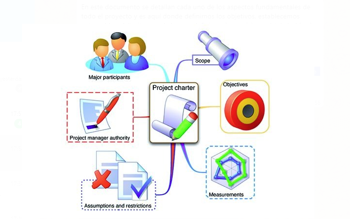

<div class="main-content">
    <div class="container-fluid">
        <div class="card">
            <div class="card-header card-header-info gray">
                <h3 class="card-title">Módulo 1: Project charter</h3>
                <!-- <p class="card-category">Created using Roboto Font Family</p> -->
            </div>
            <div class="card-body">
                <div id="typography">
                    <div class="card-title">
                        <h2>Introducción</h2>
                        <div class="container">
                            <p class="justify-content">
                                En este documento se detallan cada uno de los aspectos fundamentales de todo el proyecto y es aquí donde definimos los objetivos,
                                establecemos entregables, delimitamos el alcance, definimos las posiciones (stakeholders), asignamos responsabilidades, definimos planes
                                financieros, de recursos y de calidad, y se tienen en cuenta consideraciones como riesgos y restricciones.

                            </p>
                            <p class="justify-content">
                                El Pmbok describe el Project Charter o Acta de constitución del proyecto como;
                                “Es el proceso de desarrollar un documento que autoriza formalmente la existencia de
                                un proyecto y confiere al director del proyecto la autoridad para asignar los recursos de la organización a las actividades del proyecto”.
                            </p>
                            <p class="text-center">
                                
                            </p>
                        </div>
                        <h3><b>¿Que contiene el Project Charter o acta de constitución del proyecto?</b></h3>
                        <div class="container">
                            <p class="justify-content">
                                Existen varias plantillas diseñadas para la realización de un Project Charter o acta de constitución,
                                sin embargo el gerente de proyectos puede crear su propio formato cumpliendo como mínimo con los siguientes ítems:
                            </p>
                            <ul class="justify-content">
                                <li>Gerente de proyectos asignado, su responsabilidad y nivel de autorización.</li>
                                <li>Objetivos del Proyecto.</li>
                                <li>Justificación del Proyecto.</li>
                                <li>Descripción general del proyecto.</li>
                                <li>Requerimientos de alto nivel.</li>
                                <li>Riesgos de alto nivel.</li>
                                <li>Resumen de los hitos más importantes en el cronograma.</li>
                                <li>Lista de los Stakeholders o interesados del Proyecto.</li>
                                <li>Requerimientos para la aprobación del proyecto.</li>
                                <li>Nombre y nivel de autorización del Sponsor o la persona que autoriza el Project Charter.</li>
                            </ul>
                            <p class="justify-content">
                                Lo importante con la generación de este documento es que se tiene un registro formal de la iniciación, límites y terminación del proyecto siendo de gran importancia para el éxito del mismo, ya que si se hace de forma deficiente la redacción de este documento, será motivo para el aumento de riesgos y hasta fracaso del proyecto que se va a llevar a cabo.
                            </p>
                        </div>
                    </div>
                </div>
            </div>
        </div>
    </div>
</div>
